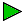
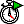
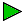
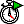

Java WorkShop Terminology
The following terms are used throughout the online help. Understanding these terms may help you get through the tutorial more quickly. Other terms specific to Java WorkShop (such as applet and thread) are explained when you first encounter them in the tutorial.
As you proceed through the tutorial, keep an eye on the animated icon in the upper-right corner of the browser. The cube spins around when Java WorkShop is loading a help page.
- Java WorkShop Main Toolbar
- The area at the top of the window just below the menu bar. The Java WorkShop main toolbar looks like this:

 





- Edit/Debug Toolbar
- The toolbar above the source editor window. The Edit/Debug toolbar looks like this:


- Button
- An element in either a toolbar or a window that you can click to cause an action to occur. For example, if you click the Projects button the Java WorkShop Project Manager window is displayed.
Tool tips are provided for the toolbar buttons. If you are unsure of what action a toolbar button performs, place the pointer over the button to display a description. For example, if you place the pointer over the button, "String Search" is displayed.
- Menu
- A list of items from which you can choose a particular task or object. The menus appear in the browser between the title bar and the Java WorkShop main toolbar. An item in a menu is often referred to in the form Menu -> Menu Item. For example, Project -> Build means "choose the Build item in the Project menu."
- Tab
- A tabbed page (similar to a dialog box) that is displayed when you click a tab in a window. For example, the Edit Project window contains the following tabs: General, Build, Debug/Browse, and Run.